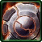
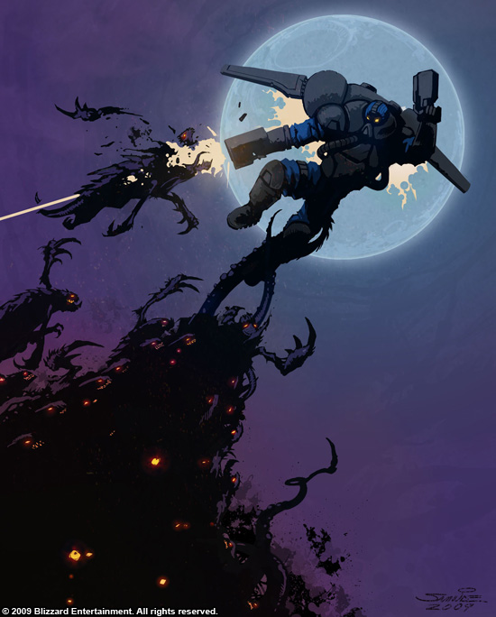

- Stats
- Abilities/Upgrades
- Strategy
- Lore
- Related
Armor: 0
 0/0 0 per second
0/0 0 per secondName: P-45 Gauss Pistols
Damage: 4 (9 vs light)
Attacks: 2
Cooldown: 1.1
Targets: Ground only
Attack Range: 4.5
-Attack 2-
Name: D-8 Chage
Damage: 30
Attacks: 1
Cooldown: 1.8
Targets: Ground Structures only
Attack Range: 5
Requirements: Levels 2-3 requires Armory
| Level |  Level 1 Level 1 |  Level 2 Level 2 |  Level 3 Level 3 |
| Minerals |  100 100 | 175 | 250 |
| Vespene Gas |  100 100 | 175 | 250 |
| Time |  160 160 | 190 | 220 |
| Damage Bonus | +1 (+1) | +3 | +2 (+2) | +6 | +3 (+3) | +9 |
| Total Damage | 5 (10) (x2) | 33 | 6 (11) (x2) | 36 | 7 (12) (x2) | 39 |
3.8398 with
 Nitro Packs
Nitro PacksAcceleration: 1000
Collision Radius: 0.375
50Vespene Cost:
50Supply:
 1
1Produced From: Barracks with Tech Lab Build Time:
45Requirements: Barracks with Tech Lab
Requirements: Levels 2-3 requires Armory
| Level |  Level 1 Level 1 |  Level 2 Level 2 |  Level 3 |
| Minerals | 100 | 175 | 250 |
| Vespene Gas | 100 | 175 | 250 |
| Time | 160 | 190 | 220 |
| Armor Bonus | +1 | +2 | +3 |
| Total Armor | 1 | 2 | 3 |
Medivac Size: 1
Bunker Size: 1
Unit Type: Light, Biological, Ground
| Icon | Minerals | Vespene Gas | Research Time | Researched At |
 | 0 | 0 | 0 | Already Researched |
Information: Jet Pack allows the Reaper to travel up and down cliffs. All Reapers start with this ability.
The Reaper may only go up or down one layer of a cliff at a time. This prevents them from going up and down steep cliffs, or from going up or down more than one elevation change at once.
| Icon | Minerals | Vespene Gas | Research Time | Researched At |
| 50 | 50 | 100 | Tech Lab on Barracks (Factory) |
Information: Nitro Packs is researched in a Tech Lab addon connected to a Barracks, and requires a Factory.
Nitro Packs gives a passive speed boost to the Reapers. Increasing their speed to 3.8398 from 2.9531.
If you have any suggestions for more strategies, go ahead and post on the forums 'here'!
+1 Weapons vs Zerglings
When Zealots have a +1 weapon advantage versus Zerglings, they will kill Zerglings in two attacks instead of three. This makes Zealots very effecient against Zerglings until the zerg catches up in armor upgrades.
Because of this, there are a handful of timing attack that take advantage of the effecient +1 weapon zealots, forcing the zerg to make spines, roaches, or some other unit than zerglings unless the zerg wants to trade inefficiently.
+1 Weapons vs Zerglings
Sum text about how gosu this is
+1 Weapons vs Zerglings
Sum text about how gosu this is
- Overview
Reapers specialize in hit-and-run, close-quarters combat. They are more mobile than marines as their jet packs allow them to surmount obstacles independently. Reapers are clad in self-contained body suits, and are armed with dual P-38 "Scythe" gauss pistols and deuterium-eight demolition charges.
Reapers are drawn from marine recruits that could not be successfully subjugated by neural resocialization. These resistant recruits tend to be among the most hardened of criminals, and are sent instead to the "Icehouse" in the Torus System to be inducted into the Reaper Corps. Reaper recruits are chemically altered to make them even more aggressive before being subjected to brutal training in close-quarters combat and the use of their jet packs.
Reapers are obligated to serve two years before being discharged. In the first five years the Reaper Corps failed to have a single recruit complete more than six months of service. However, some reapers were allowed to leave the program for reasons such as injury.
{kind=link}
Source Information
Text information from the Starcraft Wiki.
Photo 1 created by Samwise Didier. Copyright: Sons of the Storm.
| Terran |
| Units |
| Command Center | SCV | Mule |
| Barracks | Marine | Marauder | Ghost | Reaper |
| Factory | Hellion | Siege Tank | Thor |
| Starport | Medivac | Viking | Banshee | Raven | Battlecruiser |
| Structures |
| Basic Buildings | Command Center | Orbital Command | Supply Depot | Refinery |
| Defensive Buildings | Planetary Fortress | Bunker | Missile Turret | Sensor Tower |
| Infantry Buildings | Barracks | Engineering Bay | Ghost Academy |
| Mechanical Buildings | Factory | Starport | Armory | Fusion Core |
| Add-ons/Spawned | Auto-Turret | Point Defense Drone | Tech Lab | Reactor |